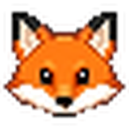
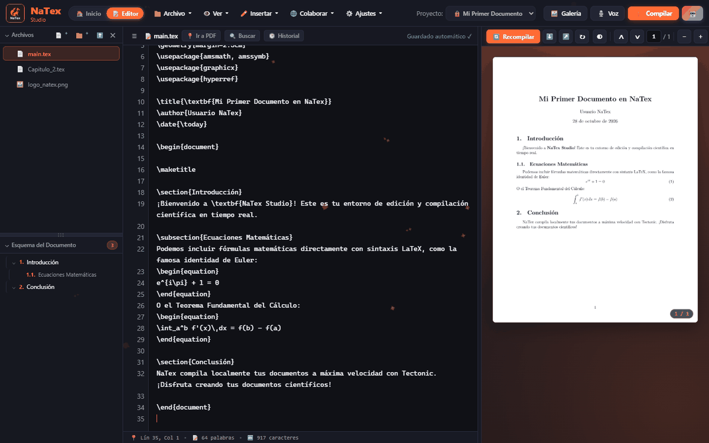

Creado por NachoFariDirectorio de prácticas industriales, prácticas profesionales, becas y beneficios estudiantiles para Ingeniería Civil Física / Ingeniería Física.
Creado por NachoFari especialmente para estudiantes de física, matemáticas e ingeniería. Redacta informes de laboratorio, papers IEEE, presentaciones Beamer y memorias de título sin instalaciones pesadas de TeX Live ni suscripciones mensuales.
